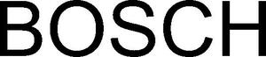

Trade Mark Journal No.2026/008 20 February 2026
WO0000001892534 (1,3,4,5,6,7,8,9,10,11,12,16,17,18,20,21,24,25,28,35,36,37,38,41,42,44,45)
Office of origin: Germany
Date of International Registration:21 May 2025
Date of designation in the UK:
21 May 2025

International priority date claimed: 22 November 2024
(Germany)
- Class 1
- Chemicals used in industry, science and photography, as well as in agriculture, horticulture and forestry; unprocessed artificial resins, unprocessed plastics; tempering and soldering preparations; adhesives used in industry; acidulated water for recharging accumulators; brake fluid; fillers for automobile bodies; coolants for engines; fluids for hydraulic circuits; compositions for repairing inner tubes; mould-release preparations; power steering fluid; tire repairing compositions; soap [metallic] for industrial purposes; transmission fluid; salt, raw.
- Class 3
- Cleaning preparations; fabric softeners; descaling preparations for household purposes; detergents, other than for use in manufacturing operations and for medical purposes; dishwasher tablets; dishwashing detergents; dishwasher powder; dishwasher rinsing agents.
- Class 4
- Industrial oils and greases; lubricants; dust absorbing, wetting and binding compositions; fuels (including motor spirit) and illuminants; electrical energy; non-chemical fuel additives; non-chemical fuel additives; non-slipping preparations for belts.
- Class 5
- Reagents for diagnostic tests.
- Class 6
- Common metals and their alloys; metal building materials; transportable buildings of metal; materials of metal for railway tracks; non-electric cables and wires of common metal; ironmongery, small items of metal hardware; pipes and tubes of metal; safes; cast steel; tanks of metal; ores; goods of metal not included in other classes, namely common metals and their alloys, building materials made of metal, transportable buildings made of metal, metal railway construction materials, cables and wires made of metal, locksmith goods and small iron goods, metal pipes, safes, tanks of metal; cable drums (non-mechanical -) of metal; metal coupling parts.
- Class 7
- Machines and machine tools for treatment of materials and for manufacturing; machine tools; motors and engines (except for land vehicles); machine coupling and transmission components (except for land vehicles); catalytic converters; starters for motors and engines; fittings for engine boilers; manifold (exhaust -) for engines; exhausts for motors and engines; drill chucks [parts of machines]; drilling heads [parts of machines]; drilling bits [parts of machines]; fuel conversion apparatus for internal combustion engines; brushes [parts of machines]; steam condensers [parts of machines]; printing plates; reducers (pressure -) [parts of machines]; pressure regulators [parts of machines]; pressure valves [parts of machines]; printing cylinders; cartridges for filtering machines; injectors for engines; expansion tanks [parts of machines]; inking apparatus for printing machines; springs [parts of machines]; flues for engine boilers; filters [parts of machines or engines]; guides for machines; hangers [parts of machines]; glaziers' diamonds [parts of machines]; glow plugs for diesel engines; moulds [parts of machines]; taps [parts of machines, engines or motors]; hoods [parts of machines]; controls (hydraulic -) for machines, motors and engines; hydraulic door openers and closers [parts of machines]; card clothing [parts of carding machines]; tubes (boiler -) [parts of machines]; scale collectors for machine boilers; kick starters for motorcycles; valves (clack -) [parts of machines]; pistons [parts of machines or engines]; pistons for engines; piston rings; fuel economisers for motors and engines; radiators [cooling] for motors and engines; filters for cleaning cooling air, for engines; knives for mowing machines; housings [parts of machines]; stands for machines; tables for machines; knives [parts of machines]; blade holders [parts of machines]; feeders [parts of machines]; controls (pneumatic -) for machines, motors and engines; pneumatic door openers and closers [parts of machines]; pumps [parts of machines, engines or motors]; pump diaphragms; regulators [parts of machines]; saw blades [parts of machines]; saw benches [parts of machines]; mufflers for motors and engines; valves [parts of machines]; slide rests [parts of machines]; grease boxes [parts of machines]; rings (grease -) [parts of machines]; lubricators [parts of machines]; machine fly-wheels; chucks [parts of machines]; feeding apparatus for engine boilers; carburetter feeders; reels [parts of machines]; vacuum cleaner bags; vacuum cleaner hoses; vacuum cleaner attachments for disseminating perfumes and disinfectants; control mechanisms for machines, engines or motors; control devices for the control of hydrogen engines; stuffing boxes [parts of machines]; plunger pistons; drums [parts of machines]; fans for motors and engines; fan belts for motors and engines; heat exchangers [parts of machines]; water heaters [parts of machines]; holding devices for machine tools; rack and pinion jacks; sparking plugs for internal combustion engines; igniting magnetos; igniting magnetos for engines; igniting devices for internal combustion engines; cylinders for machines; cylinders for motors and engines; pistons for cylinders; cylinder heads for engines; alternators; anti-friction bearings for machines; anti-pollution devices for motors and engines; axles for machines; ball-bearings; adhesive bands for pulleys; bearing brackets for machines; ball rings for bearings; dynamo belts; belts for conveyors; bicycle dynamos; blades [parts of machines]; brake linings, other than for vehicles; brake segments, other than for vehicles; brake shoes, other than for vehicles; carbon brushes [electricity]; carburettors; carriage aprons; chaff cutter blades; chisels for machines; drain cocks; dynamo brushes; freewheels, other than for land vehicles; sharpening wheels [parts of machines]; hammers [parts of machines]; sealing joints [parts of engines]; machine wheels; machine wheelwork; reels [parts of machines]; roller bearings; printing rollers for machines; rolling mill cylinders; self-oiling bearings; sieves [machines or parts of machines]; speed governors for machines, engines and motors; superchargers; tools [parts of machines]; turbocompressors; electric motors, starters [excluding those for land vehicles], generators, ignition systems for internal combustion engines, glow plugs, spark plugs, ignition distributors, ignition coils, magneto igniters, spark plug connectors, injection pumps, fuel pumps, speed regulators for machines and engines, injectors for engines and holders for injectors; machine valves; devices for direct hydrogen injection into the internal combustion engine; compressors for gases [hydrogen gas or liquids]; hydraulic installations [compressors]; fuel pumps and compressors; compressors for gases; hydrogen compressors; parts and accessories for hydrogen storage systems and hydrogen supply systems in fuel cells, namely hydrogen valves [pressure valves [machine parts]], hydrogen end plugs [pressure valves [machine parts]], hydrogen manifolds [machine parts], as well as hydrogen control devices for machines or engines; fuel filters; oil filters; filters for cleaning cooling air, for engines and mechanical purposes; hydraulic pumps; hydraulic engines and motors; hydraulic valves; hydraulic cylinders as machine parts; hydraulic accumulators as machine parts; hydraulic filters as parts of machines or engines; pneumatic valves, power steering [steering linkages for machines], compressed air brakes, compressed air devices, namely compressed air compressors, compressed air tanks, control valves, brake valves [parts and accessories of machines]; turbo-superchargers; machine elements for automatic assembly and manufacturing technology, including workplace equipment, namely machine-adapted work tables [parts of machines], mounts adapted for machines, protective parts specially adapted for machines, swivel work tables [parts of machines], lifting devices, table presses [machines], as well as material supply and organization systems, namely conveyor belts and conveyor chains, vibrating conveyors, rocker arms [machine parts], as well as programmable electrical devices [conveying systems] including grippers [machine parts] and robotic arms for industrial purposes; deburring machines [mechanical, thermal, and electrochemical]; packaging machines; motors, electric, other than for land vehicles; starting devices for internal combustion engines; agricultural implements, other than hand-operated; electric gardening tools, in particular hedge trimmers, lawn mowers, grass shears, grass trimmers, scythes, shredders, pumps; motor-driven agricultural implements and gardening tools and machines, in particular blowers, compressors, and high pressure washers as machines, vacuum cleaners [as machines], lawn mowers, and motor-driven devices for lawn scarifying, mechanical soil and lawn cultivation equipment, and lawn trimmers; motor-driven saws; machine tools for cutting; motor-driven scissors; motor-driven shredders; pumps [as far as included in this class], in particular water pumps; machine-operated maintenance and cleaning devices; electric power tools, namely drills [power tools]; screwdrivers; grooving machines; grinding, cutting, and roughing machines; extraction devices and dust collection devices for the aforementioned goods; power tools and their plug tools; wet and dry vacuum cleaner; the aforementioned goods also as battery-operated hand tools; electric household and kitchen machines and appliances and their accessories, namely machines for chopping, machines for mixing and kneading, pressing machines, juicers, juice extractors, grinders, cutting machines, electric can openers, knife sharpeners, as well as machines and apparatuses for preparing beverages and/or food; electric waste disposal devices including waste shredders and waste compactors; dishwashing machines; electric machines and devices for treating laundry and garments including washing machines, spin dryers, ironing presses, and ironing machines; electric cleaning devices for household purposes, in particular window cleaning devices, shoe cleaning machines, vacuum cleaners, wet and dry vacuum cleaners; dust filter bags for vacuum cleaners; hoses as machine or engine parts; pipes as machine or engine parts; nozzles as machine or engine parts; dust filters for vacuum cleaners; electric film sealing machines; electric devices for dispensing beverages or food; vending machines; parts, tools, and accessories for the aforementioned goods, as far as included in this class; electric welding apparatus; electric arc welding apparatus; electric arc cutting apparatus; welding electrodes; door openers, electric; door closers, electric; lift controls; elevator controls; solar-powered electricity generators; starters for motors and engines; generators; direct injection for liquids and hydrogen [injectors for engines]; soldering lamps; starting devices [starters] for internal combustion engines.
- Class 8
- Hand-operated tools and devices, in particular for cutting, drilling, grinding, sharpening, and surface treatment; hammers; mallets; sledgehammers; panel beating hammers; multi-tool [hand-operated multifunction tools]; screwdrivers, non-electric; screwdrivers, non-electric; screwdriver bits for hand operated screwdrivers; flexible screwdrivers (non-electric -); sanding blocks; hand drills, hand operated; drills; taps [hand tools]; chucks, clamping chucks [parts of hand-operated tools]; bits [parts of hand tools]; extension pieces for braces for screwtaps; glaziers' diamonds [parts of hand tools]; hollowing bits [parts of hand tools]; bits [hand tools]; tap wrenches (hand operated -); sets of socket spanners; nut drivers [hand tools]; socket wrenches [hand tools]; screw wrenches; torque wrenches; ratchet wrenches [hand tools]; ring spanners; oil filter wrenches; tap ratchets (hand operated -); squares [hand tools]; saws [hand tools]; frames for handsaws; hack saws; saw blades [parts of hand tools]; saw holders; shear blades; tool belts [holders]; tool bags and tool backpacks [filled]; fastening and joining tools; handles for hand-operated hand tools; cramps for use in holding workpieces; bolt cutters [hand-operated tools]; guns [hand tools]; screw thread formers [hand tools]; agricultural implements, hand-operated; hand-operated agricultural gardening tools; pearl catchers; lawn clippers [hand instruments]; hand-operated lawn scarifying devices; hand-operated lawn care devices; hand-operated cutting devices; scissors for garden and household; border shears; ladles [hand tools]; shovels; shovels [hand tools]; hand-operated tillers; pliers; locking pliers; punch pliers; crimping tools (hand operated -); halligan bars; chisels; crow bars; levers; hand-operated tools for emergency and rescue; scissors (non-electric -) for wallpaper; blades [hand tools]; pocket knives with multi-purpose attachments; box cutters; scissors; scrapers for floors and windows; sharpening stones; putty knives; pincers; glass cutters; files [tools]; wire cutters [hand tools]; snow shovels; hand-operated sanders; tin snips; hand-operated tools and implements for treatment of materials, and for construction, repair and maintenance; razors; depilation appliances, electric and non-electric; hair clippers for personal use, electric and non-electric; manicure sets, electric; fingernail polishers, electric or non-electric; nail clippers, electric or non-electric; nail files, electric; electric irons; steam ironing stations; parts, tools, and accessories for the aforementioned goods, as far as included in this class.
- Class 9
- Electrical and electronic navigation, surveying, photographic, cinematographic, optical, weighing, measuring, signaling, checking [supervision], life-saving and teaching devices and instruments; apparatus and instruments for conducting, switching, transforming, accumulating, regulating or controlling electricity; apparatus for recording, transmission or reproduction of sound or images; data processing apparatus; computers; computer peripheral devices; monitors [computer programs]; fire-extinguishing apparatus; magnets; protective clothing and shoes, in particular fire protection clothing, specialized clothing for laboratories, accident, radiation, and fire protection clothing, clothing for injury protection, reflective clothing for accident prevention, asbestos clothing for fire protection, asbestos gloves for accident protection, accident, radiation, and fire protection shoes; solderers' helmets; filters for respiratory masks; protective masks; protection devices for personal use against accidents; workmen's protective face shields.; spark-guards; speaker enclosures; electric controls for compressors; covers for electric outlets; electric installations for the remote control of industrial operations; electrified fences; furniture especially made for laboratories; coin-operated mechanisms for operating gates for car parks; holders for electric coils; hands free kits for phones; electric locks; masts for wireless aerials; push buttons for bells; railway traffic safety appliances; safety restraints, other than for vehicle seats and sports equipment; steering apparatus, automatic, for vehicles; theft prevention installations, electric; camera tripods; electronic control systems for turnstiles; vehicle breakdown warning triangles; control devices, namely electric and electronic control and measuring devices for energy management, electronic control units in vehicles for controlling electrical systems [lighting, central locking, power windows, safety and comfort functions] and for controlling keyless entry and keyless vehicle operation; interfaces [central gateway and vehicle integration platform] for the networking and integration of electronic control units and systems in vehicles; stored or downloadable software platforms as well as electric control units for the integration and control of vehicle movements and drive systems; sensors for use in systems for monitoring and controlling battery parameters, energy flow, and energy management in vehicles; semiconductor components and modular semiconductor building blocks [chiplets] for controlling driving assistance systems, engines, transmissions, brakes, and steering in vehicles; semiconductor devices for controlling communication, connectivity, navigation devices, audio and video playback devices in vehicles; semiconductor components for controlling and monitoring energy and battery management in vehicles; electrical and electronic measuring, control, and regulation devices for installation in motor vehicles; devices for recording, editing, processing, transmitting, receiving, and displaying signals, data, images, and sounds, electro- and electromagnetic data carriers; video cameras, displays, speakers, antennas for radios and televisions, telephone devices, car antennas, portable walkie-talkies, car phones; alarm systems; devices for location and navigation; cameras for video security, surveillance cameras, thermal imaging cameras; monitors for video security, digital video recorders, solid-state video recorders [SSVR]; encoders; decoders; alarm and warning devices and systems, in particular for use in alarm control centers, security control centers, intrusion detection systems; keyboards for security alarms; motion sensors; alarm sensors; flame detectors; data transmission systems; electronic access control systems for buildings; access control devices; security, protection, and signaling devices; simultaneous interpretation receivers; sound systems; public address systems; loudspeakers; microphones; repeaters; electrical cabling; power supply units; electric power units; electrical filters; semiconductor apparatus; optoelectronic components; printed, etched, and encapsulated circuits, integrated circuits, relays; fuses and wires for electrical, electronic, and optical signals; cable splices; switches, electric; electronic headlight range adjustment; sensors; detectors; switching devices; switchboxes; solar cells; photovoltaic cells; analysis devices for motor vehicles, in particular for exhaust gas, soot particle, and brake function analysis; diagnostic instruments and facilities for simulations; engine testers; workshop testing devices; chargers; battery testers; transformers [electricity]; charging cables; charging stations for electric vehicles; batteries and accumulators; batteries, electric, for vehicles; chargers for electric batteries; electrical and electronic distance meters, altimeters, angle meters, inclinometers, locating devices for detecting metal and other materials; computer software for controlling irrigation; fuel cells for stationary and mobile applications; fuel cell stacks; fuel cell stacks for aerospace applications; components for fuel cell stacks [parts of a fuel cell stack such as MEA, bipolar plates, and end plates]; fuel cells with integrated interface plates, humidifiers and water separators; modules for photovoltaic power generation; gas testing instruments; programmable controllers; electronic driving assistance systems for installation in motor vehicles; parking sensors; electronic transmitting and receiving devices [on-board units] for use on toll roads; safety and protection devices; electrical and electronic measuring, control, and regulation devices for installation in e-bikes and pedelecs; electrical devices and instruments, namely kitchen scales, personal weighing scales; remote controls, signaling devices, control devices, and monitoring devices for household and kitchen machines and appliances; described and undescribed machine-readable data carriers such as magnetic data carriers for household appliances; data processing devices and data processing software for the control and operation of household appliances; measuring tapes; rules [measuring instruments]; yardstick; dosage dispensers; analysers; laboratory instruments; medical simulators for educational purposes; electric sensors; regulating apparatus (electric); electronic data carriers; data collection apparatus; recorded data; electronic publications, downloadable; electronic publications recorded on computer media; computer keyboards; computer operating software [stored]; software; mobile apps; downloadable software applications, in particular software for controlling and monitoring security systems for buildings and properties, software for automated parking controls and automatic parking assistance for vehicles, computer systems and software for automated vehicle control, software for controlling brake, steering, drive, and suspension control systems in vehicles, software for controlling safety, driving assistance, driver input [pedals, control elements], and detection systems [sensors, cameras] in vehicles, software and hardware components [sensors, actuators, control software, software for vehicle navigation devices, software for audio and video navigation in vehicles, software for monitoring trailers [trailer performance monitoring], software and devices for charging and current drain of electric vehicles for feeding into other power circuits outside the vehicle, software for monitoring conveyor belts, software for determining the location and status of objects, products, and shipments during transport, data processing software, communication software, auxiliary, safety, and cryptography software, decoder software; downloadable applications for use with mobile devices; downloadable mobile applications for information management, software for theft protection and emergency call systems in vehicles; downloadable mobile applications for the transmission of information; downloadable mobile applications for the management of data; downloadable mobile applications for map data [navigation data] to enable automated driving; automated car parking control devices; artificial intelligence software for use in devices, appliances, and instruments; interfaces for computers; software for use as an application programming interface [API]; computer software and hardware for use in relation to artificial intelligence, machine learning, deep learning, and reinforcement learning; platform [software] for voice recognition, image analysis, with translation functions; software for facial analysis; software for facial recognition; predictive maintenance software; software for remote diagnostics related to remote portal, remote device management, and remote system management; video display software; downloadable publications; computer hardware and stored software for controlling connected devices in the internet of things [IoT]; software for home and building automation; software for mobile applications that enable interaction and an interface between vehicles and mobile devices; cloud computing software; computer software for interpreting fingerprints or palm prints; software for vein pattern recognition, gesture control, speech recognition, and motion pattern recognition; software for data transmission to electronic locks and access control devices via a global computer network, wireless telephone networks, or through radio transmission; software for downloading applications and for remote programming, control, monitoring, and management of electronic locks and access devices via global computer networks, wireless telephone networks, or through radio transmission; software for smart home devices for building and home automation; software for programming, controlling, monitoring, and managing electronic locks and access control devices; stored software for data processing systems, in particular for home video surveillance devices, home alarm devices, home locking systems, and home automation; virtual and augmented reality software; software for streaming data; software for interactive learning; software for virtual, augmented, and mixed reality that enables users to interact with experiences, environments, and content of virtual, augmented, and mixed reality; virtual reality glasses; smart glasses, data glasses [smart glasses]; virtual visors; quantum sensors; parts and accessories for the aforementioned goods as far as included in this class; electronic control units for manufacturing technology, for resistance welding systems, for servo drives, and for gear spindles; sensors [H2 sensors] for measuring hydrogen concentrations; spirit levels; gas mixers for laboratory use; thermostats; controls for headlights and lights, in particular those for vehicles; lambda sensors; high frequency generators.
- Class 10
- Medical and veterinary instruments and apparatus; medical apparatus and instruments; medical diagnostic, examination, and monitoring devices; medical devices for the prevention, diagnosis, or treatment of diseases using artificial intelligence, machine learning, deep learning (deep learning experiences), and reinforcement learning techniques; analysis devices for patient blood samples using artificial intelligence in conjunction with a connected platform; devices for the treatment and alleviation of diseases; artificial organs; prosthetics and artificial implants; wound treating equipment; medical furniture; medical bedding; nurses' trolleys adapted to contain drugs; examination tables and chairs for hospitals; ambulance stretchers; masks and equipment for artificial respiration; oxygen masks; gloves for medical purposes; masks for use by medical personnel; clothing for medical use; medical blankets for the warming and cooling of patients; patient monitoring instruments; patient safety restraints; patient monitoring sensors and alarms; diagnostic apparatus for medical purposes; testing apparatus for medical purposes; health monitoring systems, cartridges for holding liquids for medical analysis purposes; parts and accessories for the aforementioned goods as far as included in this class; coats for hospital use; clothing, footwear, headgear for medical personnel and visitors in hospitals, clinics, sanatoriums, and medical practices.
- Class 11
- Apparatus for lighting, heating, steam generating, cooking, refrigerating, drying, ventilating, water supply and sanitary purposes; installations for water treatment; igniters; friction lighters for igniting gas; gas heat generators; gas lighters; gas condensers, other than parts of machines; regulating and safety accessories for gas pipes; air valves for steam heating installations; anti-glare devices for automobiles [lamp fittings]; boiler pipes [tubes] for heating installations; brackets for gas burners; chimney blowers; chimney flues; lamp chimneys; coils [parts of distilling, heating or cooling installations]; dampers [heating]; distillation apparatus; distillation columns; filters for drinking water; expansion tanks for central heating installations; air purifiers; feeding apparatus for heating boilers; air and water filters for household or industrial purposes; filters for air conditioning; furnace grates; fittings, shaped, for ovens; flues for heating boilers; gas cleaners and purifiers; hot air bath fittings; humidifiers for central heating radiators; kiln furniture [supports]; lamp casings; lamp glasses; lamp globes; lamp shades; lampshade holders; light diffusers; mixer taps for water pipes; oil-scrubbing apparatus; oven fittings made of fireclay; ovens (shaped fittings for -); taps for pipes and pipelines; water-pipes for sanitary installations; polymerisation installations; sewage purification installations; radiator caps; lamp reflectors; regulating accessories for water or gas apparatus and pipes; regulating and safety accessories for water or gas apparatus, and for water or gas pipes; sockets for electric lights; framework of metal for ovens; level controlling valves in tanks; valves (thermostatic -) [parts of heating installations]; washers for water taps; heating, cooking, grilling, warming, and cooling devices; heating, steam generation, cooking, and cooling/freezing devices, in particular stoves, baking, frying, grilling, toasting, defrosting devices, as well as warming devices and plates for food, immersion heaters, electric cooking pots, microwave cooking devices, electric tea and coffee machines; cooling devices, in particular refrigerators, freezers, cooling/freezing combinations, deep freezing devices, ice makers; vessels for making ices and ice cream; driers, in particular clothes dryers, tumble dryers for laundry purposes; hand driers; hair dryers; ventilation devices, in particular fans, grease filter devices, and extraction devices, including range hoods; air conditioning devices and devices for improving air quality, air humidifiers, fittings for steam, air, and water supply devices, water heaters, storage water heaters, and water heaters for circulating water; kitchen sinks; heat pumps; headlights and lights, in particular those for vehicles; refrigerators; refrigerating apparatus; ventilating installations; electric coffee brewers; roasters; bakers' ovens; electric egg cookers; toasters; air-conditioning installations; safety devices and control devices for gas heating systems; shower heads; parts and accessories for the aforementioned goods as far as included in this class; devices for splitting water into hydrogen and oxygen [electrolyzers] for mobile and stationary applications; defrosting devices for windshields [heating, ventilation, and air conditioning systems for vehicles]; separators for gas purification, namely from carbon dioxide for mobile and stationary applications.
- Class 12
- Vehicles; apparatus for locomotion by land, air or water; vehicles with fuel cells; hydrogen-fueled cars; hydrogen engines for automobiles; motor vehicles with diesel, gas, hydrogen, or electric drive; engines for land vehicles, in particular gas, diesel, hydrogen, and electric engines; vehicle covers [shaped]; axle journals; air bags [safety devices for automobiles]; trailer hitches for vehicles; transmission chains for land vehicles; driving motors for land vehicles; transmission shafts for land vehicles; automobile tyres; saddle covers for bicycles or motorcycles; covers for vehicle steering wheels; balance weights for vehicle wheels; anti-glare devices for vehicles; brake segments for vehicles; brake facings for vehicles; brake shoes for vehicles; vehicle chassis; automobile chassis; anti-theft devices for vehicles; anti-theft alarms for vehicles; torque converters for land vehicles; jet engines for land vehicles; motors, electric, for land vehicles; bicycle kickstands; brakes for bicycles, cycles; rims for wheels of bicycles; brakes for vehicles; windows for vehicles; bodies for vehicles; vehicle wheels; vehicle tires; vehicle seats; doors for vehicles; repair outfits for inner tubes; crankcases for land vehicle components, other than for engines; horns for vehicles; hydraulic circuits for vehicles; automobile bodies; automobile chains; couplings for land vehicles; treads for retreading tires [tyres]; casings for pneumatic tyres; motors for land vehicles; hoods for vehicle engines; automobile hoods; hubs for vehicle wheels; bands for wheel hubs; connecting rods for land vehicles, other than parts of motors and engines; screw-propellers; axles for vehicles; gearing for land vehicles; treads for vehicles [roller belts]; tires for vehicle wheels; reversing alarms for vehicles; rearview mirrors; clutches for land vehicles; windscreen wipers; screw-propellers for boats; steering gears for ships; tubeless tires [tyres] for bicycles; mudguards; inclined ways for boats; safety belts for vehicle seats; safety seats for children, for vehicles; safety harnesses for vehicle seats; suspension shock absorbers for vehicles; shock absorbers for automobiles; shock absorbing springs for vehicles; vehicle bumpers; bumpers for automobiles; torsion bars for vehicles; vehicle suspension springs; driving chains for land vehicles; propulsion mechanisms for land vehicles; turbines for land vehicles; transmissions, for land vehicles; reduction gears for land vehicles; valves for vehicle tires [tyres]; windscreens; motors for bicycles; cycle stands; gears for cycles; restraint systems for installation in motor vehicles, namely seatbelt tensioners, airbags; servo and pneumatic brakes for land vehicles and aircrafts; anti-lock braking systems for automobiles; traction control systems for automobiles; transmission mechanisms for land vehicles; vehicle dynamics control systems [anti-lock braking systems]; electric and hydraulic steering for land, air, and water vehicles; electric bicycles; pedelecs; anti-lock braking systems for e-bikes and pedelecs; parts and accessories for the aforementioned goods in this class; cigar lighters for automobiles; restraint systems for installation in motor vehicles, namely for use with vehicle safety belts.
- Class 16
- Teaching and educational materials [excluding apparatus], as far as included in this class; printed matter; goods made of paper or cardboard [carton], as far as included in this class, namely informational brochures, flyers, magazines, business cards, appointment slips, prescription pads, name tags, display boxes, leaflets, brochures, charts, photographs [prints], books, posters, magazines, postcards, greeting cards, pads, forms, vouchers, banners, roll-ups, folders, and flags; book binding material; advent calendars; photographs; stationery; pencils; felt marking pens; adhesives for stationery or household purposes; artists' materials; paint brushes; typewriters and office requisites (except furniture); plastic materials for packaging (not included in other classes); printers' type; printing blocks; disposable sterilization pouches.
- Class 17
- Rubber, gutta-percha, gum, asbestos, mica; plastics in extruded form for use in manufacture; packing, stopping and insulating materials; flexible pipes, not of metal; compressed air pipe fittings, not of metal; junctions, not of metal, for flexible pipes; brake lining materials, partly processed; clutch linings; semi-processed plastics; reinforcing materials, not of metal, for pipes; resins (artificial -) [semi-finished products]; valves of india-rubber or vulcanized fiber [fibre]; washers of rubber or vulcanized fiber [fibre]; elastic yarns, other than for textile use; gum; rubber; latex [rubber]; watering hoses and their non- metallic coupling pieces.
- Class 18
- Trunks and suitcases; umbrellas and parasols; saddlery; tool bags and tool backpacks sold empty.
- Class 20
- Furniture, in particular kitchen and bathroom furniture, washstands; mirrored cabinets; modular elements for automated assembly and manufacturing technology, including workplace equipment, namely worktables and workbenches; tanks [hydrogen tanks] [non-metallic], in particular tanks for the storage and transport of chemicals, compressed gases, and liquids; parts and accessories for the aforementioned goods in this class; cable drums (non-mechanical -) of non-metallic materials.
- Class 21
- Bottle openers, electric and non-electric; corkscrews, electric and non-electric; water sprinkling devices (sprinklers).
- Class 24
- Fabrics; bed linen; table linen, not of paper; fabrics for textile purposes; lingerie fabric; linens.
- Class 25
- Clothing; footwear; headgear; workshop clothing; work clothes; sportswear.
- Class 28
- Games; toys; gymnastic and sporting articles not included in other classes.
- Class 35
- Advertising; business management; business administration; office functions; office machines and equipment rental; organization of trade fairs for commercial or advertising purposes; presentation of goods on communication media, for retail purposes; procurement services for others [purchasing goods and services for other businesses]; organizational economic preparation of space projects; retail services in relation to spare parts and accessories for motor vehicles, lubricants, car radios, navigation systems, car speakers, car multimedia systems, and car antennas; computerised data verification; data compilation [office work]; data entry; data processing services [office functions]; business data analyses; facilitating business contacts to promote collaboration within scientific, medical, clinical, and research-oriented communities to achieve advancements in these fields using artificial intelligence, machine learning, deep learning (deep learning experiences), and reinforcement learning techniques; data management services; information and advice regarding the aforementioned services; mediation and conclusion of contracts for third parties concerning the buying and selling of goods and the provision of services; rental of items in connection with the provision of the aforementioned services, as far as included in this class; employee leasing; rental and leasing of office machines and devices; rental and leasing of objects in connection with the provision of the aforementioned services contained in this class; personnel leasing.
- Class 36
- Insurance services; rental of items in connection with the provision of the aforementioned services, as far as included in this class; rental and leasing of objects in connection with the provision of the aforementioned services contained in this class; leasing; financial support for medical science and research.
- Class 37
- Building construction; maintenance and repair of land, water, and air vehicles; burner maintenance and repair; maintenance and repair of computer hardware; maintenance and repair of machines; motor vehicle maintenance and repair; office machines and equipment installation, maintenance and repair; machinery maintenance and repair; maintenance and servicing of security alarms; repair or maintenance of telephone apparatus; repair or maintenance of electric motors; services for the maintenance of windows in vehicles; servicing of commercial vehicles; servicing of commercial vehicles; anti-rust treatment for vehicles; boiler cleaning and repair; cleaning of building interiors; vehicle cleaning; motor vehicle wash; varnishing; vehicle greasing; vehicle maintenance; maintenance services relating to computer hardware; maintenance of internal combustion engines; car maintenance; motor vehicle maintenance; vehicle maintenance; motor vehicle maintenance; servicing of commercial vehicles; vehicle polishing; service stations (vehicle -) [refuelling and maintenance]; fitting of windscreens in motor vehicles; fitting of windows in motor vehicles; installing of electronic communications networks; fitting of replacement vehicle parts; installation of lighting systems; vehicle service stations [refuelling and maintenance]; installation, maintenance, and repair of parts and accessories, in particular of walkie-talkies, hand-held power tools, workshop equipment and devices, generators of household and kitchen appliances, broadcasting and television systems, sanitary facilities, heating and air conditioning systems, and furniture; support [vehicle repair, maintenance, and refueling] and restoration of motor vehicles at motorsport events; workshop service for the repair and maintenance of fuel cells for stationary and mobile applications; construction consultancy; advisory services relating to the repair of motor vehicles; rental of items in connection with the provision of the aforementioned services, as far as included in this class; construction consulting; rental and leasing of objects in connection with the provision of the aforementioned services, insofar as it contains in this class.
- Class 38
- Telecommunications; information about telecommunication; radio transmission services; transmission of data, sound and images via satellite; providing access to platforms and portals on the internet; telecommunications services via mobile networks; telecommunications services for remote access to data; rental of items in connection with the provision of the aforementioned services, as far as included in this class; rental and leasing of objects in connection with the provision of the aforementioned services, insofar as it contains in this class.
- Class 41
- Education; providing of training; training; further education; entertainment; sporting and cultural activities; publication of texts, other than publicity texts; conducting virtual training; education information; publication of electronic books and journals on-line; training services; vocational training services; provision of training; education and instruction; educational services; provision of training courses; entertainment services provided at a motor racing circuit; provision of information relating to motor sports; organization of scientific seminars, colloquia, conferences, congresses, symposia, subject-specific courses and presentations, as well as exhibitions for cultural or educational purposes; conducting educational programmes; services of a foundation, namely education, training, entertainment, international understanding [cultural activities] and sports activities for health promotion; organisation of sporting events; arranging of training sessions on the topic of e-bikes; rental of items in connection with the provision of the aforementioned services, as far as included in this class; rental and leasing of objects in connection with the provision of the aforementioned services contained in this class.
- Class 42
- Scientific and technological services and research and design relating thereto; industrial analysis and research services; design and development of computer hardware and software; software programming and implementation; maintenance of computer software; software rental; development, programming, and implementation of software for providing access to platforms and portals on the internet; hosting services; software as a service [SaaS]; software as a service regarding software for machine learning; software as a service [SaaS] with software for use with home and environmental monitoring, control, and automation systems; software as a service [SaaS] with software for connecting and controlling electronic devices of the internet of things; software as a service [SaaS] with software for connecting, operating, integrating, controlling, and managing connected home electronics; software as a service [SaaS] featuring software for deep learning; design and development of software for the digital representation of a tangible or intangible object from the real world [digital twin]; remote maintenance of computer software; application service provider services for software for application programming interfaces [API] for home and environmental monitoring, control, and automation; application service provider [ASP] services with software for controlling, integrating, operating, connecting, and managing voice-controlled information devices, namely cloud-connected and voice-controlled home electronics; software as a service [SaaS] with software for streaming data; enabling temporary use of non-downloadable online software and applications for accessing data streaming; application service provider services for software for use in healthcare using artificial intelligence, machine learning, deep learning, and reinforcement learning techniques; research and technological consultancy in the fields of artificial intelligence, machine learning, deep learning (deep learning experiences), and reinforcement learning; monitoring of vehicles to ensure proper functioning; remote monitoring of the operation, performance, and efficiency of electric vehicles; provision of non-downloadable software for predictive analysis of charging and maintenance of electric vehicles and for predictive analysis of consumer needs; monitoring of wirelessly connected electric battery devices with embedded firmware and software for energy storage and supply to ensure proper operation and programming to meet energy demand and achieve consumption targets; design of electrical battery systems consisting of wirelessly connected electric battery devices and corresponding software; development of metaverse platforms and applications; scientific and technological services as well as industrial analysis and research work and related design services in the medical field; scientific laboratory services; medical quality management and quality management in healthcare, namely quality assessment and quality control; services of a medical laboratory; construction planning, design planning and construction drafting; creation and installation of programs for data processing; technological consultancy and preparation of reports relating to technical research; conducting calculations for third parties regarding technical analysis and testing services; research and development services as well as conducting technical tests; engineering consultancy services; technical planning, technical development, and technical review of space projects; monitoring of the design planning of buildings and facilities; engineering services related to energy consulting; gas testing; rental of items in connection with the provision of the aforementioned services, as far as included in this class; digital image processing [graphic arts design]; forensic analysis of surveillance videos for fraud and theft protection purposes; software rental and leasing; rental and leasing of objects in connection with the provision of the aforementioned services, insofar as it contains in this class.
- Class 44
- Medical and veterinary services; hygienic and beauty care for human beings or animals; medical assistance; hospital services; conducting medical and clinical examinations; medical care; medical analysis services for the diagnosis and prognosis of diseases; conducting analyses for the diagnosis and prognosis of diseases; health screening; medical clinic services; individual medical counseling services provided to patients; providing information to patients in the field of administering medications; agriculture, horticulture and forestry services; rental of items in connection with the provision of the aforementioned services, as far as included in this class; rental and leasing of objects in connection with the provision of the aforementioned services contained in this class.
- Class 45
- Legal services; personal and social services rendered by others to meet the needs of individuals, namely legal services as well as services in the field of security; security services for the protection of property and individuals; physical security consultancy; organization of political meetings; monitoring of buildings; monitoring of facilities; surveillance services; alarm monitoring services; monitoring of security systems; monitoring of anti-intrusion and security alarms; electronic monitoring services for security purposes; guarding of facilities using remote monitoring services; licensing of computer software [legal services]; licensing of intellectual property; security services; rental of items in connection with the provision of the aforementioned services, as far as included in this class; rental and leasing of objects in connection with the provision of the aforementioned services contained in this class.
Robert Bosch GmbH
Representative: WP Thompson, 8th Floor, No.1 Mann Island Liverpool L3 1BP UNITED KINGDOM